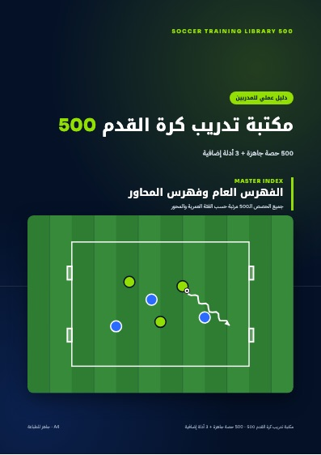
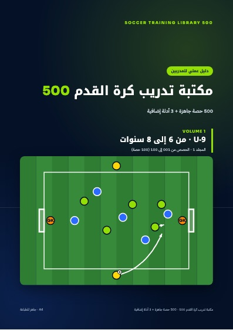
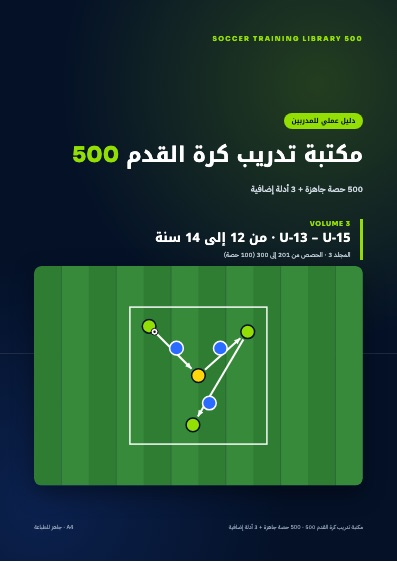
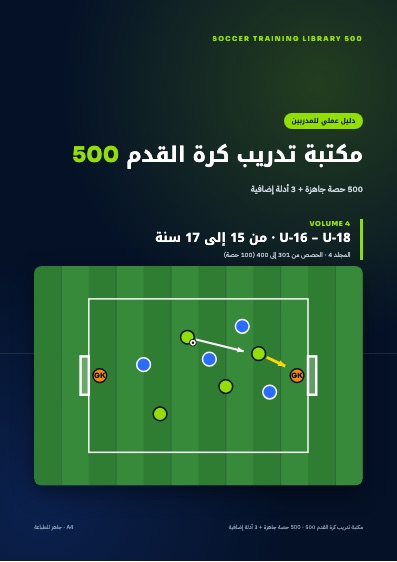
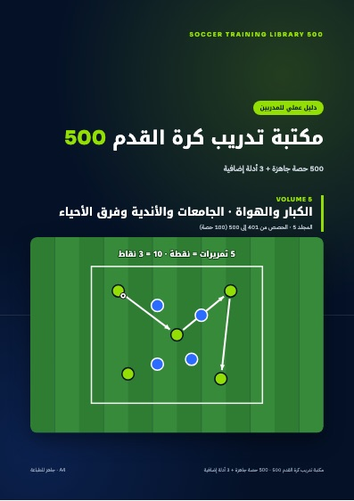

طريقة الاستخدام
- ابدأ بـ«الفهرس العام» لتحديد الفئة العمرية التي تدرّبها والمحور الذي تريد العمل عليه.
- حمّل المجلد المناسب، واطبع الصفحات التي تحتاجها، ثم اذهب إلى الملعب.
- اكتب أرقام الحصص في قالب التخطيط الأسبوعي لتجهيز أسبوع التدريب كاملًا.
على الهاتف: بعد التحميل افتح الملف من تطبيق «الملفات» أو أي قارئ PDF. احفظ هذه الصفحة في المفضلة لتعيد التحميل في أي وقت.
المنتج الرئيسي · مكتبة تدريب كرة القدم 500 (5 مجلدات + الفهرس العام)

الفهرس العام وفهرس المحاور
جميع الحصص الـ500 مرتبة حسب الفئة العمرية والمحور. ابدأ من هنا.
تحميل
المجلد 1 · U-9 (من 6 إلى 8 سنوات)
الحصص 001 – 100 · كرة قدم 8 لاعبين
تحميلالمجلد 2 · U-10 – U-12 (من 9 إلى 11 سنة)
الحصص 101 – 200 · كرة قدم 8 لاعبين
تحميل
المجلد 3 · U-13 – U-15 (من 12 إلى 14 سنة)
الحصص 201 – 300 · كرة قدم 11 لاعبًا
تحميل
المجلد 4 · U-16 – U-18 (من 15 إلى 17 سنة)
الحصص 301 – 400 · كرة قدم 11 لاعبًا
تحميل
المجلد 5 · الكبار والهواة
الحصص 401 – 500 · كرة قدم 11 لاعبًا
تحميلالأدلة الإضافية الثلاثة
BONUS 1100 تمرين سرعة لكرة القدم
الدليل الإضافي 1 · 100 تمرين سرعة لكرة القدم
رد الفعل والتسارع وتغيير الاتجاه والسرعة بالكرة · 100 تمرين
تحميلBONUS 250 تمرينًا بدنيًا بالكرة
الدليل الإضافي 2 · 50 تمرينًا بدنيًا بالكرة
التحمل والقوة وتمارين الجذع والرشاقة · 50 تمرينًا
تحميلBONUS 330 قالبًا للتخطيط الأسبوعي
الدليل الإضافي 3 · 30 قالبًا للتخطيط الأسبوعي (للطباعة)
5 فئات عمرية × مرحلتان من الموسم × من 2 إلى 4 أيام أسبوعيًا · للكتابة اليدوية
تحميلBONUS 330 قالبًا للتخطيط الأسبوعي
الدليل الإضافي 3 · 30 قالبًا للتخطيط الأسبوعي (نسخة قابلة للتعديل)
افتحه في المتصفح واكتب مباشرة ثم اطبع. يُحفظ ما تكتبه في متصفحك.
فتحالخطوة التالية
- اختر قالبًا أسبوعيًا يناسب عدد أيام التدريب ومرحلة الموسم.
- من الفهرس العام اختر 2 أو 3 حصص تناسب محور هذا الأسبوع، واكتب أرقامها في القالب.
- أضف تمرين سرعة أو تمرينًا بدنيًا قبل التمرين الرئيسي، وابدأ التدريب.